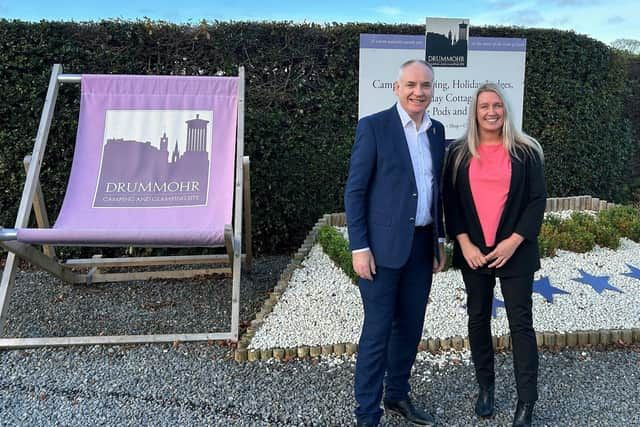

Minister tours Edinburgh park flying flag for quality tourism
Scotland's tourism minister Richard Lochhead took time out in October 2024 to see how our East Lothian holiday park Drummohr Camping and Glamping Site is using quality, team engagement and guest feedback to underwrite its success story. The visit came following a year which saw the park scoop a number of top national awards. They included the overall UK Campsite of the Year award from Camping magazine, and the Best Park in Scotland accolade from outdoor accommodation booking platform Pitchup.com. The visit comes after Craig Hoy, South Scotland MSP, submitted a motion in the Scottish Parliament congratulating the site on its recent success.Drummohr Camping and Glamping Site is using quality, team engagement and guest feedback to underwrite its success story. The visit came following a year which saw the park scoop a number of top national awards. They included the overall UK Campsite of the Year award from Camping magazine, and the Best Park in Scotland accolade from outdoor accommodation booking platform Pitchup.com.
The top-rated site at Musselburgh scored full marks from reviewers on the Pitchup site, with visitors praising its strategic location just eight miles from Edinburgh city centre and stunning views of the Firth of Forth. Voters in the Camping Awards 2024 were also impressed by its ‘awesome location’ as well as its ‘super friendly staff’.

The Pitchup.com awards were based on more than 171,000 verified reviews from guests who visited accommodation booked through the online platform during 2023. Sites were evaluated on aspects such as location, value for money, quality of accommodation, activities and cleanliness, with the highest rated sites in each regional category named as winners.
The Camping Awards recognise the best products, brands, retailers and campsites in the UK and include three categories which are voted for by the public including Campsite of the Year. The public poll included readers of Camping magazine, online votes via its sister website, Out and About Live, and from its social media channels.
Angie Purves, site manager at Drummohr, said: “We always aim to go the extra mile for our guests and I think the fact that both awards came from either reviews or votes from the public reflects the hard work, passion and dedication of the entire team. We want to ensure that everyone who visits Drummohr gets the best experience possible, from the moment we receive their booking to the moment they leave our gates. We hope this encourages them to come back and stay with us and recommend us to family and friends. Ultimately, our job is to help our guests make wonderful memories which will last a lifetime.”
The MSP was welcomed to Drummohr by Jo Ritzema, Managing Director and Daniel Sowerby, the company's Head of Estates and Facilities. He was greeted too by Drummohr Site Manager Angie Purves who said she was keen to show how the park was constantly raising the bar on its quality standards.
Based in the 11-acre grounds of a former monastery some 10 miles from Edinburgh, the park provides a range of accommodation options for visitors to the city and surrounding countryside. Angie explained to the Minister that much of the energy on the park is generated by solar panels, and that a charging point is available for the owners of electric vehicles. In addition, guests are encouraged to make use of the excellent local bus and train transport links when exploring the region, and are provided with maps and timetables in their own language.
Mr Lochhead also heard how the park has become a haven for wildlife and undertaken a raft of landscaping projects to protect its native flora and fauna, including owls and red squirrels.
At one of the park's newly refurbished amenity buildings for touring guests, the Minister planted a cherry blossom tree to commemorate Drummohr's recent prestigious five-star award from the AA. The tree was placed in memory of one the long-standing seasonal site guests who had recently passed away.
There he also met with two of the park's site wardens Mark and Elaine Hedger and gardener John Witherspoon to hear about how its biodiversity objectives are being met. This included wildflower gardens and bug hotels.
And there was a pause for celebration when Mr Lochhead presented on behalf of WCF a bottle of bubbly to Angie Purves to mark her winning of the company's "Above and Beyond" award for managing the transformation of the site and grounds.
Speaking after his visit, Mr Lochhead said: Drummohr Camping and Glamping Site has had an impressive and award-winning year. I was particularly pleased to congratulate the organisation for being designated the UK’s best campsite by a respected industry body. It was encouraging to hear of their dedication to sustainability while touring the five-star site and commend them for paving the way for similar businesses to embrace the change required to tackle the climate emergency. Businesses like Drummohr are important to Scotland’s economy, with the number of caravan park and campsite businesses having grown by 48% since 2010 and now combining to contribute over £102 million to Scotland’s economy. That’s why the Scottish Government is committed to a strong, high-value tourism sector and stands ready to do all we can to support businesses to be successful."
The Minister was accompanied on his park tour by Sarah Allanson, Scottish Director of the British Holiday & Home Parks Association (BH&HPA) which co-hosted the visit.
"It was great to be able to show the Minister how we are committing to first-class quality standards to ensure that our guests enjoy the best possible experience," said Angie. It's very much a team effort involving all of our employee owners and guests. The park invests substantially in new facilities and top-end accommodation to meet the highest expectations and focusses on implementing the little things that make a huge difference. We are proud too that the spending of our visitors benefits many smaller local businesses, such as shops, restaurants and visitor attractions, and supports the jobs they provide. We actively promote these both on our website and through our guest app. Our park has a strong "buy local" policy and our shop sources many of its products from nearby producers and suppliers, from ice cream and eggs to craft beer and jewellery. We are very much part of the local community, and we are delighted that Mr Lochhead was able to see how we are taking our responsibilities to it seriously".
Press Links
- Minister tours Edinburgh park flying flag for quality tourism
- BHHPA - Minister tours Edinburgh park flying flag for quality tourism
- Luxury camping resort with spectacular sea views and incredible beaches nearby voted best in Scotland
- Drummohr's success highlighted in Scottish Parliament
- 'Perfect' camping site near Edinburgh crowned best in Scotland ahead of summer
- Luxury camping resort close to Edinburgh named Scotland's best
- Drummohr Camping and Glamping Site Wins Scotland’s Best by Pitchup Awards
- Scottish Camping and Glamping Site Named Best in UK
- Camping and glamping site near Edinburgh named best in the UK
- Luxury Scottish resort just steps from glorious beach voted best by UK campers
- Scottish camping and glamping site just outside Edinburgh crowned best in UK
< Previous Article
Longnor Wood named AA Campsite of the Year for Heart of England